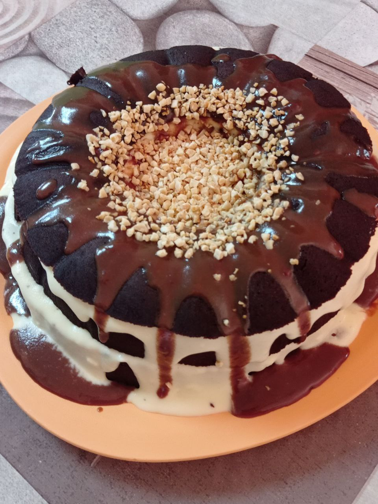

Baking is one of my favorite things, either in my free time or when I need a stress reliever. Besides, cake is one of my favorite foods to eat. As you can see from the pictures above, I have tried to bake different types of cakes. When I bake a cake, I enjoy doing it, and when the cake is done baking, of course the last step to do is to decorate the cake that I have baked. Decorating cakes is a satisfaction for me to express my talent and interest.
When I met the daughter of a well-known cake maker in Besut, I fell in love with baking. It was a blessing when I was already a cake lover and got the opportunity to learn to bake cakes by myself. I started baking cakes when I was in high school. My friend started teaching me how to make a basic cake, and I started learning the rules for baking a cake. Then my mother also supported my hobby, so she started buying me cake items. Then I tried to practise at home using recipes from YouTube, and when I got good at it, I started to enjoy doing it.
Surprisingly, I used my abilities to do something that made me happy. So I decided to bake a cake by myself to celebrate my family's birthday party without buying one at a bakery. Then I try to make a cake for fun and give it to a friend to taste, but accidentally, I get some orders from them, so I start selling the cake to have my own income.
When I bake, I always get a little bit of happiness deep down in my spirit. It seemed as though I was destined from birth to combine flour and make magic with it. There is no question that I have other interests, but none of them match to the fervour that I have for baking.